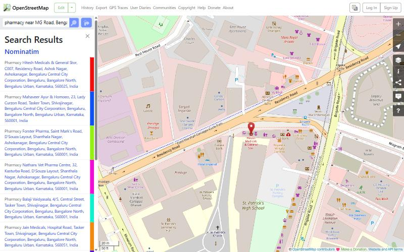
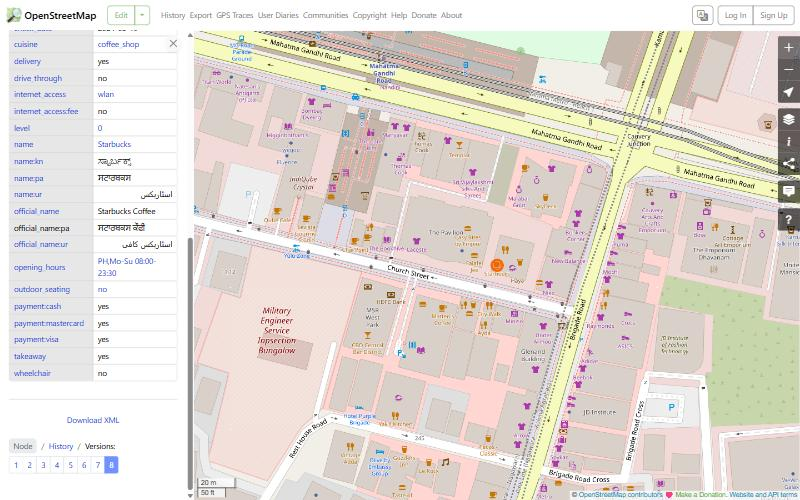

Find what you need, right where you are. A better way to find nearby essentials on OpenStreetMap.
I used openstreetmap.org and focused on one workflow: searching for a place, opening it, and getting directions to it. The people I had in mind are newcomers to a city, like students who just moved to Bengaluru and don't know the area yet. They usually need simple things fast: a pharmacy, an ATM, a hospital, a washroom.
What OSM already has: a search box (Nominatim), a page for every place, "Query features", directions with three routing engines, a share option and map layers. I tested all of these myself. These are the problems I found:
| # | What I saw on openstreetmap.org |
|---|---|
| E1 | "pharmacy near MG Road, Bengaluru" works, but every result is a long address line. No distance, no open or closed status, no sorting by nearest. |
| E2 | "pharmacy near me", with the map sitting on Bengaluru, returned pharmacies in Sicily (Italy) and Venezuela. "near me" is just treated as text. |
| E3 | Opening hours are shown as raw tags like PH,Mo-Su 08:00-23:30. Nothing tells you if it is open right now. |
| E4 | A place page only offers "Download XML" and "History". No directions, call or share button. |
| E5 | "Query features" mixes useful places with things like "Waste Basket #11117253952" and footpaths. No filters. |
| E6 | From an India-wide view, "pharmacy near MG Road" picked MG Roads in West Bengal and Mumbai, not Bengaluru. It never asks which one you meant. |
I also checked the data around MG Road. Out of 233 shops and services, only 17 had opening hours. So the app has to be honest when hours are missing.


Problem statement: someone new to a city cannot quickly find the nearest essential place that is open right now using OpenStreetMap. "near me" doesn't use their location, street names land in the wrong city, results have no distance or open status, and there is no easy way to get directions from a place.
The impact is real. A student with a fever at night opens several results, reads raw tags, types the address again for directions, and may still end up at a closed shop or in the wrong part of the country. Most people just give up and use another app, even though OSM has the data.
I built Beacon, a web app on top of OpenStreetMap data that does one job well: get you to the nearest essential place.
| Feature | HTML5 | Tailwind CSS | JavaScript |
|---|---|---|---|
| Search bar | form role="search", input type="search", combobox list | glass pill, focus ring, responsive width | query parser, debounced suggestions, keyboard nav |
| Voice search | button with aria-pressed | red mic button, pulse while listening | Web Speech API events |
| Category chips | buttons in a group, "More" dialog | rounded pills, grid in popover | ResizeObserver fits chips to width |
| "Which one?" cards | list of buttons | cards with hover state | Photon fetch, distance ranking |
| Results | ol / li, time | skeleton loaders, badges | Nominatim + Overpass fetch, sorting, filters |
| Place card | section, table for hours, links | photo header, blue Go Now | opening_hours parsing, Wikidata photo fetch |
| Directions + Start | ol of steps, dl summary | route card, nav banner | OSRM fetch, GPS watch, route snapping |
| Report form | form, select, textarea, checkbox, required | error and success styles | validation on blur and submit, localStorage |
| Layout | header, nav, aside, main sections | sidebar on desktop, bottom sheet on phone | pointer events for the sheet |
The app uses React with TypeScript for the screens. The core JavaScript the paper asks for is kept in plain .js files inside src/js so it is easy to read and check.
The "Report a problem" form checks the type, place name, details (at least 15 characters), an optional email or phone, the map location and a consent tick. Each field is checked when you leave it, and everything is checked on submit. Errors show under the field and in a summary at the top. When it is valid you get a success screen and a toast, and the report is saved on the device with an option to post it as an OSM Note. The search box and settings form are validated too.
Every response is parsed from JSON and turned into one simple place format, so the screens don't care where the data came from.
| On OpenStreetMap | In Beacon |
|---|---|
| "near me" goes to Italy (E2) | Uses your location |
| Wrong MG Road (E6) | Nearest one, or "Which one?" cards |
| No distance or order (E1) | Nearest first with walking time |
| Raw hours (E3) | "Open · closes 23:30" and a weekly table |
| No actions on a place (E4) | Go Now, Call, Website, Save, Share |
| Noisy results (E5) | Only real places, with filters |


Live app: https://chiragdascodes.github.io/FSDCIA1/
GitHub repo: https://github.com/Chiragdascodes/FSDCIA1
The repo has a README and a commit for every step (analysis, setup, core logic, map, search, place card, PWA, redesign, navigation). Every push runs the tests, builds and deploys to GitHub Pages on its own.
npm install then npm run dev. Tests: npm test. Build: npm run build.
React, TypeScript, Vite, Tailwind CSS, MapLibre GL for the map and globe, OpenFreeMap map styles, Phosphor icons, and free OpenStreetMap services. No login or backend, everything runs in the browser.
64 automated tests, all passing. They cover the search parser (like "medical shop near me" and "atm near MG Road"), picking the right MG Road, opening hours, distance, form validation, the fetch error handling and the navigation maths. The full log is in docs/test-results.txt.
| What I tested by hand | Result |
|---|---|
| "pharmacy near MG Road" from Bengaluru | Picks Bengaluru's MG Road, 20 pharmacies, nearest first |
| "hospital near Church Street" | Asks which one, shows two Church Streets with area and distance |
| Location denied | Falls back to Bengaluru and says so |
| Report form with bad input | Errors shown per field, saved only when valid |
| Go Now and Start | Route drawn, navigation follows the route |
| Overpass server down | Results still shown with a small note |
| Phone and desktop sizes | Layout adapts, no sideways scrolling |
I used Claude (an AI assistant by Anthropic) while making this project. It helped me analyse openstreetmap.org, write and debug code, and draft this document. I decided the problem, the user group and the design direction, gave the UI references, tested the app myself and asked for changes until it worked the way I wanted. I have gone through the code and can explain how it works.